Klasfikasi Suara#
Pengenalan suara adalah teknologi yang memungkinkan komputer atau mesin untuk mengenali, memahami, dan memproses ucapan manusia sehingga dapat diterjemahkan menjadi perintah atau teks. Teknologi ini semakin banyak digunakan dalam kehidupan sehari-hari, mulai dari asisten virtual hingga sistem kontrol perangkat pintar.
Dalam analisis ini, saya mencoba membangun model sederhana yang mampu membedakan dua kata perintah dasar: “buka” dan “tutup”. Dataset yang digunakan berasal dari rekaman suara saya sendiri.
Harapannya, eksperimen ini bisa menjadi contoh sederhana bagaimana machine learning dapat diterapkan pada pengenalan suara sehari-hari.
1. Data Understanding#
1.1 Install Dependency yang diperlukan#
pip install librosa soundfile numpy matplotlib seaborn scikit-learn pydub joblib
librosa
→ Library utama untuk audio processing.soundfile
→ Untuk membaca dan menulis file audio.wav.numpy
→ Dasar perhitungan numerik.matplotlib
→ Visualisasi dasar.seaborn
→ Visualisasi statistik.scikit-learn
→ Untuk machine learning.pydub
→ Untuk konversi format audio.joblib
→ Untuk menyimpan dan memuat model scikit-learn.
1.2 Import Dependency#
from pydub import AudioSegment
import os
import numpy as np
import matplotlib.pyplot as plt
import librosa
import soundfile as sf
from sklearn.model_selection import train_test_split
from sklearn.svm import SVC
from sklearn.preprocessing import StandardScaler
from sklearn.pipeline import make_pipeline
from sklearn.metrics import classification_report, accuracy_score
import joblib
1.3 Muat file audio#
# load semua file buka
buka = []
for i in range(1, 11):
seg = AudioSegment.from_file(f"suara/m4a/buka{i}.m4a", format="m4a")
buka.append(seg)
# load semua file tutup
tutup = []
for i in range(1, 11):
seg = AudioSegment.from_file(f"suara/m4a/tutup{i}.m4a", format="m4a")
tutup.append(seg)
print("Jumlah buka:", len(buka))
print("Jumlah tutup:", len(tutup))
Jumlah buka: 10
Jumlah tutup: 10
1.4 Informasi dasar audio#
def show_info(audio_list, label):
print(f"== {label.upper()} ==")
for idx, audio in enumerate(audio_list, start=1):
print(f"[{label}{idx}]")
print(f"- Durasi: {len(audio)/1000:.2f} detik")
print(f"- Channels: {audio.channels}")
print(f"- Sample rate: {audio.frame_rate} Hz")
print(f"- Sample width: {audio.sample_width * 8} bit")
print(f"- Loudness (dBFS): {audio.dBFS:.2f}")
print()
# panggil untuk list buka dan tutup
show_info(buka, "buka")
show_info(tutup, "tutup")
== BUKA ==
[buka1]
- Durasi: 2.39 detik
- Channels: 2
- Sample rate: 48000 Hz
- Sample width: 16 bit
- Loudness (dBFS): -36.11
[buka2]
- Durasi: 2.39 detik
- Channels: 2
- Sample rate: 48000 Hz
- Sample width: 16 bit
- Loudness (dBFS): -17.79
[buka3]
- Durasi: 2.73 detik
- Channels: 2
- Sample rate: 48000 Hz
- Sample width: 16 bit
- Loudness (dBFS): -37.03
[buka4]
- Durasi: 3.09 detik
- Channels: 2
- Sample rate: 48000 Hz
- Sample width: 16 bit
- Loudness (dBFS): -30.39
[buka5]
- Durasi: 2.56 detik
- Channels: 2
- Sample rate: 48000 Hz
- Sample width: 16 bit
- Loudness (dBFS): -18.03
[buka6]
- Durasi: 2.88 detik
- Channels: 2
- Sample rate: 48000 Hz
- Sample width: 16 bit
- Loudness (dBFS): -27.24
[buka7]
- Durasi: 3.37 detik
- Channels: 2
- Sample rate: 48000 Hz
- Sample width: 16 bit
- Loudness (dBFS): -29.03
[buka8]
- Durasi: 4.05 detik
- Channels: 2
- Sample rate: 48000 Hz
- Sample width: 16 bit
- Loudness (dBFS): -17.11
[buka9]
- Durasi: 3.84 detik
- Channels: 2
- Sample rate: 48000 Hz
- Sample width: 16 bit
- Loudness (dBFS): -31.64
[buka10]
- Durasi: 2.73 detik
- Channels: 2
- Sample rate: 48000 Hz
- Sample width: 16 bit
- Loudness (dBFS): -34.32
== TUTUP ==
[tutup1]
- Durasi: 2.24 detik
- Channels: 2
- Sample rate: 48000 Hz
- Sample width: 16 bit
- Loudness (dBFS): -29.58
[tutup2]
- Durasi: 2.62 detik
- Channels: 2
- Sample rate: 48000 Hz
- Sample width: 16 bit
- Loudness (dBFS): -20.74
[tutup3]
- Durasi: 2.54 detik
- Channels: 2
- Sample rate: 48000 Hz
- Sample width: 16 bit
- Loudness (dBFS): -35.50
[tutup4]
- Durasi: 2.48 detik
- Channels: 2
- Sample rate: 48000 Hz
- Sample width: 16 bit
- Loudness (dBFS): -26.50
[tutup5]
- Durasi: 2.62 detik
- Channels: 2
- Sample rate: 48000 Hz
- Sample width: 16 bit
- Loudness (dBFS): -20.32
[tutup6]
- Durasi: 2.58 detik
- Channels: 2
- Sample rate: 48000 Hz
- Sample width: 16 bit
- Loudness (dBFS): -27.22
[tutup7]
- Durasi: 3.31 detik
- Channels: 2
- Sample rate: 48000 Hz
- Sample width: 16 bit
- Loudness (dBFS): -24.85
[tutup8]
- Durasi: 3.52 detik
- Channels: 2
- Sample rate: 48000 Hz
- Sample width: 16 bit
- Loudness (dBFS): -16.54
[tutup9]
- Durasi: 3.26 detik
- Channels: 2
- Sample rate: 48000 Hz
- Sample width: 16 bit
- Loudness (dBFS): -29.19
[tutup10]
- Durasi: 2.62 detik
- Channels: 2
- Sample rate: 48000 Hz
- Sample width: 16 bit
- Loudness (dBFS): -31.80
1.5 Waveform audio#
def plot_waveform(audio, label, idx):
samples = np.array(audio.get_array_of_samples())
if audio.channels == 2:
samples = samples.reshape((-1, 2)).mean(axis=1)
plt.figure(figsize=(10, 3))
plt.plot(samples, color="steelblue")
plt.title(f"Waveform: {label}{idx}")
plt.xlabel("Sample index")
plt.ylabel("Amplitude")
plt.tight_layout()
plt.show()
for i, seg in enumerate(buka, start=1):
plot_waveform(seg, "Buka", i)
for i, seg in enumerate(tutup, start=1):
plot_waveform(seg, "Tutup", i)
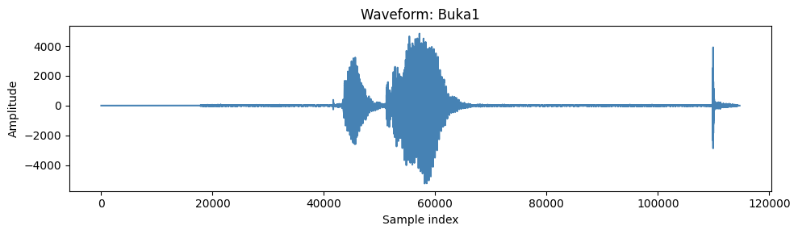
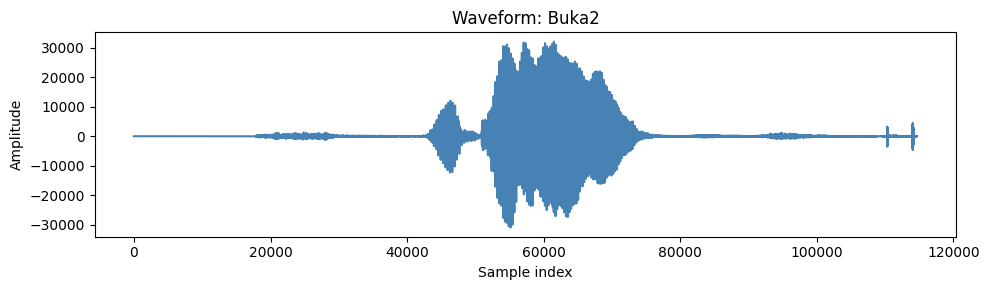
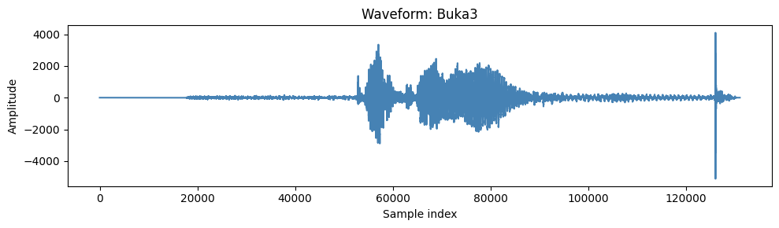
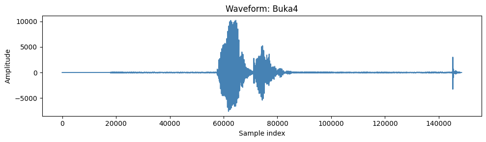
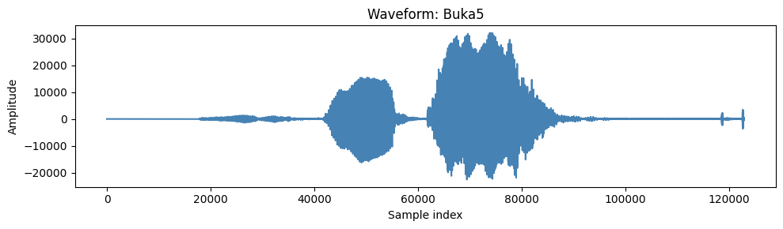
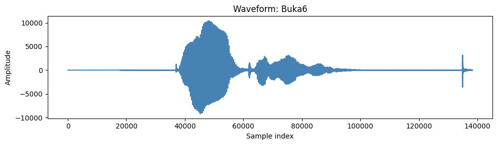
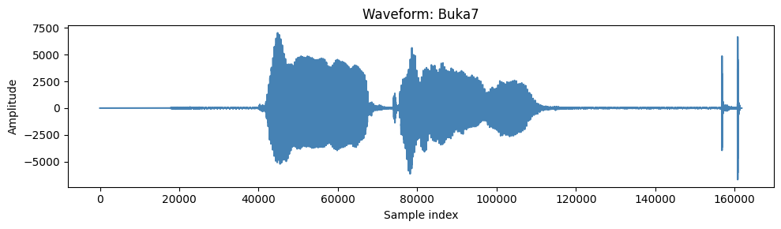
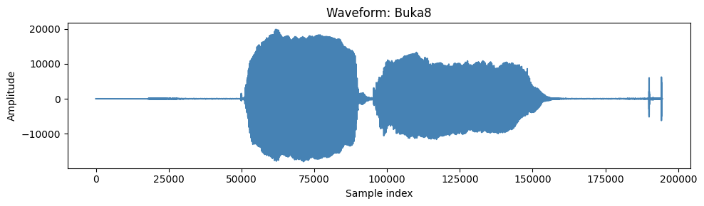
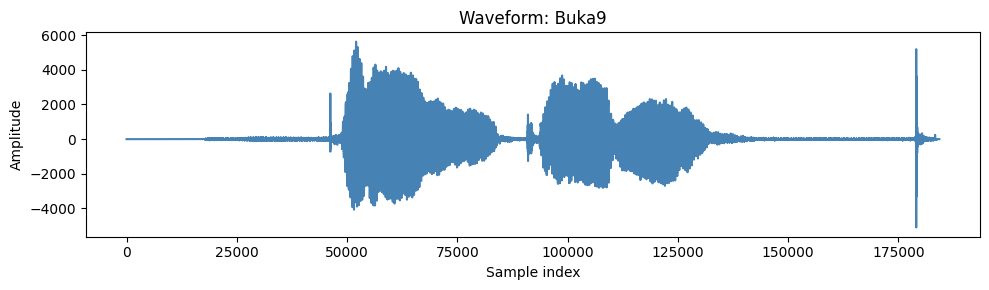
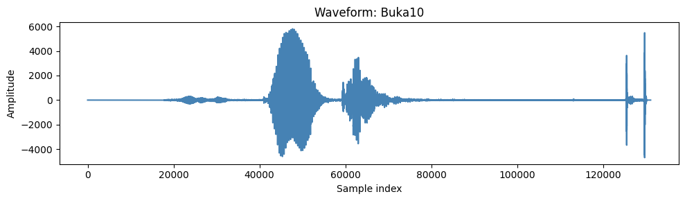
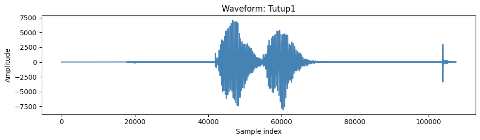
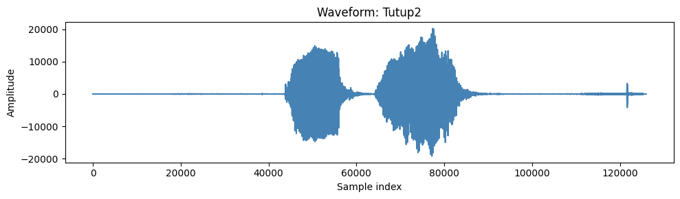
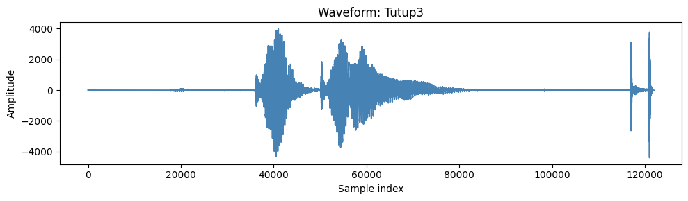
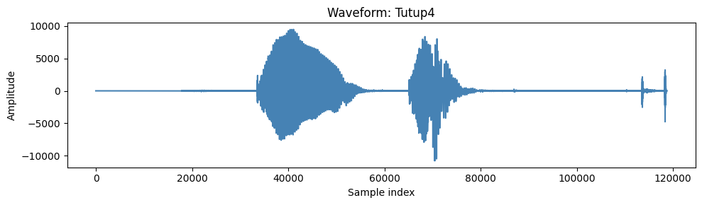
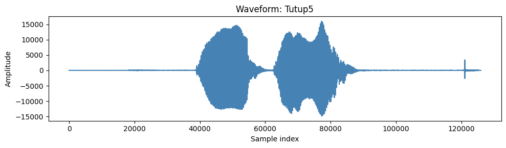
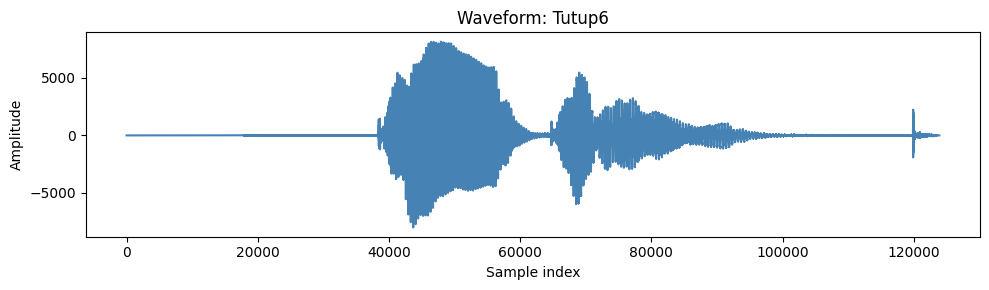
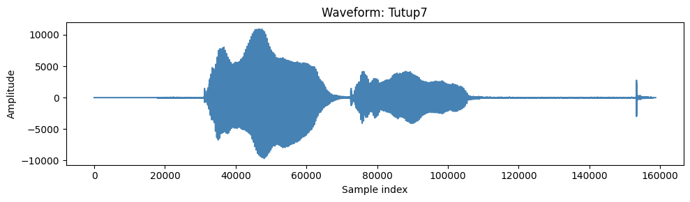
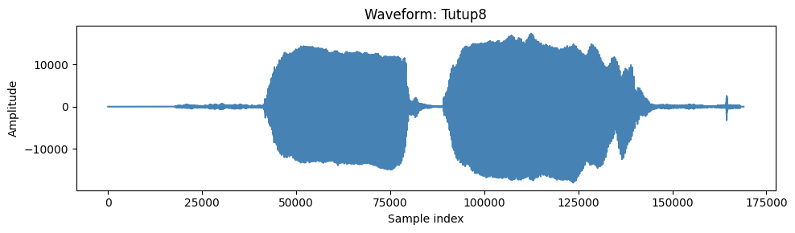
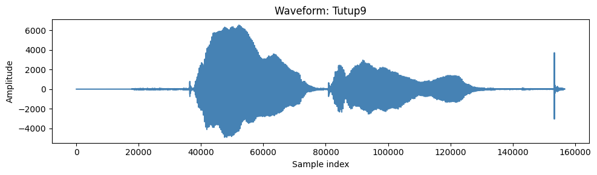
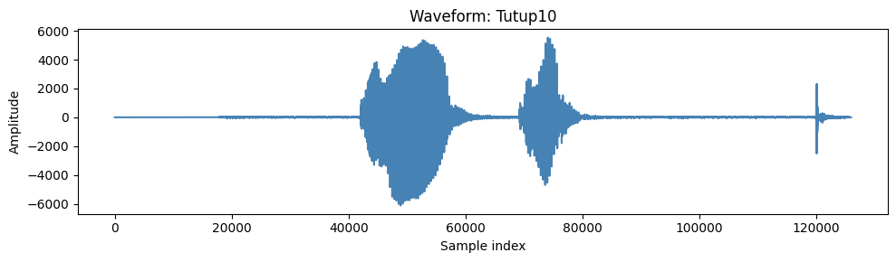
2. Preprocessing Data#
2.1 Konversi m4a → wav (mono, 16kHz)#
.wav adalah format lossless dan standar untuk audio processing di machine learning.
os.makedirs("suara/mav/", exist_ok=True)
def convert_m4a_to_wav(in_path, out_path, sr=16000):
audio = AudioSegment.from_file(in_path, format="m4a")
audio = audio.set_channels(1).set_frame_rate(sr)
audio.export(out_path, format="wav")
print(f"Converted: {out_path}")
# konversi semua buka1-10.m4a
for i in range(1, 11):
in_path = f"suara/m4a/buka{i}.m4a"
out_path = f"suara/mav/buka{i}.wav"
convert_m4a_to_wav(in_path, out_path)
# konversi semua tutup1-10.m4a
for i in range(1, 11):
in_path = f"suara/m4a/tutup{i}.m4a"
out_path = f"suara/mav/tutup{i}.wav"
convert_m4a_to_wav(in_path, out_path)
Converted: suara/mav/buka1.wav
Converted: suara/mav/buka2.wav
Converted: suara/mav/buka3.wav
Converted: suara/mav/buka4.wav
Converted: suara/mav/buka5.wav
Converted: suara/mav/buka6.wav
Converted: suara/mav/buka7.wav
Converted: suara/mav/buka8.wav
Converted: suara/mav/buka9.wav
Converted: suara/mav/buka10.wav
Converted: suara/mav/tutup1.wav
Converted: suara/mav/tutup2.wav
Converted: suara/mav/tutup3.wav
Converted: suara/mav/tutup4.wav
Converted: suara/mav/tutup5.wav
Converted: suara/mav/tutup6.wav
Converted: suara/mav/tutup7.wav
Converted: suara/mav/tutup8.wav
Converted: suara/mav/tutup9.wav
Converted: suara/mav/tutup10.wav
2.2 Trim silence + normalisasi#
os.makedirs("suara/clean/", exist_ok=True)
def trim_and_normalize(in_path, out_path, sr=16000, top_db=25):
y, _ = librosa.load(in_path, sr=sr)
yt, _ = librosa.effects.trim(y, top_db=top_db)
yt = yt / (np.max(np.abs(yt)) + 1e-8)
sf.write(out_path, yt, sr)
print(f"Cleaned: {out_path}")
# proses semua buka1-10.wav
for i in range(1, 11):
in_path = f"suara/mav/buka{i}.wav"
out_path = f"suara/clean/buka{i}.wav"
trim_and_normalize(in_path, out_path)
# proses semua tutup1-10.wav
for i in range(1, 11):
in_path = f"suara/mav/tutup{i}.wav"
out_path = f"suara/clean/tutup{i}.wav"
trim_and_normalize(in_path, out_path)
Cleaned: suara/clean/buka1.wav
Cleaned: suara/clean/buka2.wav
Cleaned: suara/clean/buka3.wav
Cleaned: suara/clean/buka4.wav
Cleaned: suara/clean/buka5.wav
Cleaned: suara/clean/buka6.wav
Cleaned: suara/clean/buka7.wav
Cleaned: suara/clean/buka8.wav
Cleaned: suara/clean/buka9.wav
Cleaned: suara/clean/buka10.wav
Cleaned: suara/clean/tutup1.wav
Cleaned: suara/clean/tutup2.wav
Cleaned: suara/clean/tutup3.wav
Cleaned: suara/clean/tutup4.wav
Cleaned: suara/clean/tutup5.wav
Cleaned: suara/clean/tutup6.wav
Cleaned: suara/clean/tutup7.wav
Cleaned: suara/clean/tutup8.wav
Cleaned: suara/clean/tutup9.wav
Cleaned: suara/clean/tutup10.wav
2.3 Augmentasi#
Menambah jumlah data (target ±100 per file).
Membuat variasi realistis dari suara asli.
Mengurangi risiko overfitting karena data terlalu sedikit
os.makedirs("suara/aug", exist_ok=True)
import random
def augment_audio_random(y, sr):
aug = y.copy()
# random pitch shift
n_steps = random.uniform(-4, 4)
aug = librosa.effects.pitch_shift(aug, sr=sr, n_steps=n_steps)
# random time stretch
rate = random.uniform(0.8, 1.2)
aug = librosa.effects.time_stretch(aug, rate=rate)
# random noise
noise = np.random.normal(0, 0.005, aug.shape)
aug = aug + noise
# random shift
shift = random.randint(-int(0.2*sr), int(0.2*sr))
aug = np.roll(aug, shift)
return aug
def generate_augments(in_path, out_dir, label, target_count=100):
y, sr = librosa.load(in_path, sr=16000)
os.makedirs(out_dir, exist_ok=True)
# simpan file asli
sf.write(os.path.join(out_dir, f"{label}_000.wav"), y, sr)
# generate random augments
for i in range(1, target_count):
aug = augment_audio_random(y, sr)
out_path = os.path.join(out_dir, f"{label}_{i:03d}.wav")
sf.write(out_path, aug, sr)
print(f"{label}: {target_count} file disimpan di {out_dir}")
# loop semua file di suara/clean
for fname in os.listdir("suara/clean"):
if fname.endswith(".wav"):
in_path = os.path.join("suara/clean", fname)
label = os.path.splitext(fname)[0]
generate_augments(in_path, "suara/aug", label, target_count=100)
buka1: 100 file disimpan di suara/aug
buka10: 100 file disimpan di suara/aug
buka2: 100 file disimpan di suara/aug
buka3: 100 file disimpan di suara/aug
buka4: 100 file disimpan di suara/aug
buka5: 100 file disimpan di suara/aug
buka6: 100 file disimpan di suara/aug
buka7: 100 file disimpan di suara/aug
buka8: 100 file disimpan di suara/aug
buka9: 100 file disimpan di suara/aug
tutup1: 100 file disimpan di suara/aug
tutup10: 100 file disimpan di suara/aug
tutup2: 100 file disimpan di suara/aug
tutup3: 100 file disimpan di suara/aug
tutup4: 100 file disimpan di suara/aug
tutup5: 100 file disimpan di suara/aug
tutup6: 100 file disimpan di suara/aug
tutup7: 100 file disimpan di suara/aug
tutup8: 100 file disimpan di suara/aug
tutup9: 100 file disimpan di suara/aug
3. Modelling#
3.1 Feature Extraction (MFCC)#
ubah audio jadi fitur numerik (MFCC) yang lebih mudah dipelajari model
def extract_mfcc(file_path, n_mfcc=40, max_len=50):
y, sr = librosa.load(file_path, sr=16000)
mfcc = librosa.feature.mfcc(y=y, sr=sr, n_mfcc=n_mfcc)
# padding/truncate
if mfcc.shape[1] < max_len:
pad_width = max_len - mfcc.shape[1]
mfcc = np.pad(mfcc, ((0,0),(0,pad_width)), mode='constant')
else:
mfcc = mfcc[:, :max_len]
return mfcc
3.2 Muat Data#
Ambil semua file dari folder data/aug/buka dan data/aug/tutup
X, y = [], []
for folder in ["suara/clean", "suara/aug"]:
for fname in os.listdir(folder):
if fname.endswith(".wav"):
path = os.path.join(folder, fname)
feats = extract_mfcc(path)
X.append(feats)
if fname.startswith("buka"):
y.append(0)
elif fname.startswith("tutup"):
y.append(1)
X, y = np.array(X), np.array(y)
print("X shape:", X.shape)
print("y shape:", y.shape)
X shape: (2020, 40, 50)
y shape: (2020,)
3.3 Split Data#
# Split train/test
X_train, X_test, y_train, y_test = train_test_split(
X, y, test_size=0.2, stratify=y, random_state=42
)
print("X_train shape:", X_train.shape)
print("X_test shape:", X_test.shape)
X_train shape: (1616, 40, 50)
X_test shape: (404, 40, 50)
3.4 Persiapan Data untuk Model Klasik (SVM)#
Model ML klasik seperti SVM memerlukan input 2D (jumlah_sampel, jumlah_fitur). Kita perlu meratakan (flatten) data MFCC kita dari 3D menjadi 2D.
# Reshape X_train dari (sampel, 40, 50) ke (sampel, 2000)
nsamples_train, nx, ny = X_train.shape
X_train_2d = X_train.reshape((nsamples_train, nx * ny))
# Reshape X_test dari (sampel, 40, 50) ke (sampel, 2000)
nsamples_test, nx, ny = X_test.shape
X_test_2d = X_test.reshape((nsamples_test, nx * ny))
print("Shape X_train setelah reshape:", X_train_2d.shape)
print("Shape X_test setelah reshape:", X_test_2d.shape)
Shape X_train setelah reshape: (1616, 2000)
Shape X_test setelah reshape: (404, 2000)
3.5 Melatih Model SVM dengan Pipeline#
Kita menggunakan Pipeline untuk menggabungkan dua langkah:
StandardScaler: Melakukan normalisasi data.SVC: Model Support Vector Classifier itu sendiri.
Dengan pipeline, proses normalisasi akan otomatis diterapkan secara konsisten saat training dan prediksi, sehingga mencegah kesalahan.
print("Melatih model SVM...")
svm_pipeline = make_pipeline(
StandardScaler(),
SVC(kernel='rbf', probability=True, random_state=42)
)
# Latih pipeline pada data training 2D
svm_pipeline.fit(X_train_2d, y_train)
print("Model SVM selesai dilatih.")
Melatih model SVM...
Model SVM selesai dilatih.
3.6 Evaluasi Model SVM#
# Lakukan prediksi pada data test
y_pred = svm_pipeline.predict(X_test_2d)
# Tampilkan hasil evaluasi
print("===== HASIL EVALUASI MODEL SVM =====")
print(f"Akurasi: {accuracy_score(y_test, y_pred):.4f}\n")
print("Laporan Klasifikasi:")
print(classification_report(y_test, y_pred, target_names=['buka (0)', 'tutup (1)']))
===== HASIL EVALUASI MODEL SVM =====
Akurasi: 1.0000
Laporan Klasifikasi:
precision recall f1-score support
buka (0) 1.00 1.00 1.00 202
tutup (1) 1.00 1.00 1.00 202
accuracy 1.00 404
macro avg 1.00 1.00 1.00 404
weighted avg 1.00 1.00 1.00 404
3.7 Menyimpan Model SVM#
Kita menyimpan keseluruhan pipeline (scaler + model) ke dalam satu file menggunakan joblib.
model_filename = "svm_audio_classifier.joblib"
joblib.dump(svm_pipeline, model_filename)
print(f"Pipeline model SVM telah disimpan ke file: '{model_filename}'")
Pipeline model SVM telah disimpan ke file: 'svm_audio_classifier.joblib'